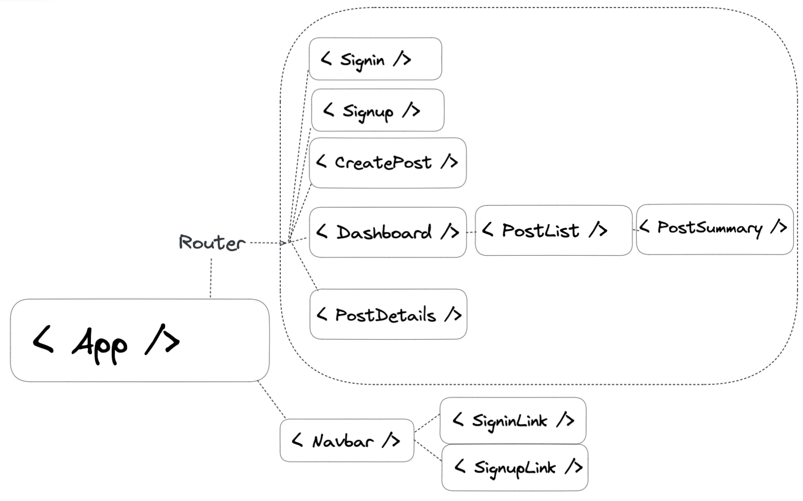

Redux
The Leading State Managment Library for React Apps
Why do we need Redux?
Web Apps are getting more complex: The motivation
As the requirements for JavaScript single-page applications have become increasingly complicated, our code must manage more state than ever before. This state can include server responses and cached data, as well as locally created data that has not yet been persisted to the server. UI state is also increasing in complexity, as we need to manage active routes, selected tabs, spinners, pagination controls, and so on.
Managing this ever-changing state is hard. If a model can update another model, then a view can update a model, which updates another model, and this, in turn, might cause another view to update. At some point, you no longer understand what happens in your app as you have lost control over the when, why, and how of its state. When a system is opaque and non-deterministic, it's hard to reproduce bugs or add new features.
Mutation & Asynchronicity
This complexity is difficult to handle as we're mixing two concepts that are very hard for the human mind to reason about: mutation and asynchronicity.
- What if we could make mutations seem like immutable copy-on-updates?
- What if we could make asynchronous operations seem like synchronous ones?
State Accessible from Anywhere
We could have the state stored in a global container, which would allow components to access state from any position in the component tree. But this can cause problems because any component can access any part of the state. transient stateful bugs, because there’s no rules for accessing or writing to the global state.
Is the Context API really state management?
Article on the differences
Context is more like hidden props than abstracted state. - Mark Erikson
Context is how state (that exists somewhere already) is shared with other components.
Context has little to do with state management. - David Khourshid
Context API is specific to the React API. Redux is more of a design pattern and since it is a separate library that can be used in any app.
Both Context & Redux allow us to avoid prop drilling, but the similarities pretty much end there.
Context vs. Redux
- Context
- Does not create a store. You have to give it one.
- Reads the Provider value
- Passes down a single value. Distinguishing bewteen different state requires separate Contexts.
- Limited support in React Dev Tools
- Difficult to skip updates of consuming component
- Doesn't handle side effects or async
- Redux
- Stores/manages singleton object
- Reads singleton object
- Mutates state with dispatch/action/reducer pattern
- Extensive custom Redux Dev Tools support
- Accomodates middleware for side effects & async ops
- Offers component subscriptions to subset of the store
- Only rerenders the component that is affected by the store update, not the whole component tree.
useContext + useReducer
- Using these in combination can start to approach a state management system
- But still rerenders the whole Provider sub-tree
- Still lacks natural way to handle async side effects
Summary
- Context:
- Passing down a value to nested components without prop-drilling
- useReducer
- Moderately complex React component state management using a reducer function
- Context & useReducer
- Moderately complex React component state management using a reducer function, and passing that state value down to nested components without prop-drilling
- Redux
- Sophisticated state management layer (independent of UI) using reducer functions
- Fantastic app date/error traceability over time
Flux Architecture & Redux
Store - View - Dispatcher/Reducer
Three Principles
Redux can be summarized as three fundamental principles:
- Single Source of Truth:
- A single store where Redux application state lives
- State is read-only:
- read-only store which is read with
store.getState()
- UI emits actions using
store.dispatch(action)
- Dispatched actions update Store via pure functions:
Redux Schematic
The Synchronous Update Cycle
Action -> Dispatch -> Reducer
Define the App's
Actions
Define the Reducer logic
to Handle the Actions
redux
⌙ actions.js
⌙ reducers.js
⌙ store.js
Add Any Actions Easily
Pass an "enum" (string) to trigger any arbitrary app logic. Mold the action & reducer logic in a flexible way.
Data type: Enums
Javascript doesn't have these natively, but we try to "fake" them with actions.
Typescript does have them though: String Enums
Action Creators
These are functions that return our action objects with the type property and any necessary payload data populated.
Action Creators follow the Factory Function Design Pattern... The are functions that return objects!
These are used to minimize the redundancy of typing the action object & type, minimize mistakes and automate passing payloads in.
const addTodo = text => {
return {
type: 'todos/todoAdded',
payload: text
}
}
Store & Actions & Reducers
const store = { count: 0 }
const action = {
type: 'increment', // type is required
data: 1 // optionally, pass any other data that's needed for the operation
}
const reducer = (state, action) => {
switch(action.type) {
case 'increment':
return { state: state.count + action.data }
case 'decrement':
return { state: state.count - action.data }
default:
return state
}
}
Declarative State Updates
Reducers provide a declarative way to update state
We simply return an object which describes what we want the new state to look like.
Then Redux handles how to procedurally accomplish that behind the scenes with a diffing/merging policy.
So, while React handles declarative VIEW updates; Redux handles declarative STATE updates!!
When to use Redux
It's a trade-off between short term and long term productivity
- You have large amounts of application state that are needed in many places in the app
- The app state is updated frequently over time
- The logic to update that state may be complex
- The app has a medium or large-sized codebase, and might be worked on by many people
Redux Core-team Recommendations
Redux Style Guide
Redux Dev Tools
Download the extension here
React-Redux Library
Docs
React Redux is the official React UI bindings layer for Redux. It lets your React components read data from a Redux store, and dispatch actions to the store to update state.
Code Along
Let's try out Redux in a simple Counter App!
Let's use Redux in our Todo App!!
Redux Toolkit
The new & improved way to Redux!
Simpler, less boilerplate & with nice new features!
Redux Toolkit Docs
configureStore(): simplifies createStore with good default configuration. Combines slice reducers, adds Redux middleware, uses redux-thunk & Redux DevTools by default.createReducer(): supplies a lookup table of action types to case reducer functions, instead of switch statements. Uses the immer library underneath.createAction(): generates an action creator function for the given action type string.createSlice(): accepts an object of reducer functions, a slice name, and an initial state value, and automatically generates a slice reducer with corresponding action creators and action types.createAsyncThunk: accepts an action type string and a function that returns a promise, and generates a thunk that dispatches pending/fulfilled/rejected action types based on that promisecreateEntityAdapter: generates a set of resusable reducers and selectors to manage normalized data in the store
RTK Quick Start
Docs
npm install @reduxjs/toolkit
npm install react-redux
- Create a store using RTK configureStore function & pass in reducer(s)
- import Redux store into App entry point file (root component file)
- Wrap the root React component with
<Provider store={store}> <App /> </Provider>
- Start writing your "slice" file:
import { createSlice } from '@reduxjs/toolkit'- Write you slice:
export const slice = createSlice({ ... })
- Add a
name, initialState and reducers to your slice
- From your slice.js file, export your
slice.actions and default export your slice.reducer
- Creating Slices & Actions
- A "slice" is a collection of Redux reducer logic and actions for a single feature in your app, typically defined together in a single file
- The name comes from splitting up the root Redux state object into multiple "slices" of state
- For example, in a blogging app, our store setup might look like:
import { configureStore } from '@reduxjs/toolkit'
import usersReducer from '../features/users/usersSlice'
import postsReducer from '../features/posts/postsSlice'
export default configureStore({
reducer: {
users: usersReducer,
posts: postsReducer,
}
})
state.users and state.posts are each a separate "slice" of the Redux state.- Since usersReducer is responsible for updating the state.users slice, we refer to it as a "slice reducer" function.
- Redux Toolkit's createSlice function uses a library called Immer so you can write immutable updates easier!
- Executes immutable, compliant state updates with assignment operations!!
But weren't we suppossed to avoid assignments!?
- Correct, with Immer.js the reducer still uses immutable code in the end. lets us write mutable looking code, and it intercepts that code and translates it into code that transacts with our Redux store immutably.
- Immer treats mutable code as a "Draft". It uses Proxies to wrap your reducer logic a "draft" copy.
- Immer tracks all your state mutations, then infers & converts those changes into the equivalent safely immutably update. Immer is only used in createSlice and createReducer, though
Immer Library docs
Normal
Immer "Draft"
function handwrittenReducer(state, action) {
return {
...state,
first: {
...state.first,
second: {
...state.first.second,
[action.someId]: {
...state.first.second[action.someId],
fourth: action.someValue
}
}
}
}
}
function reducerWithImmer(state, action) {
state.first.second[action.someId].fourth = action.someValue
}
Selectors & useSelectordocs
Selectors are functions that know how to extract specific pieces of state from the store. This can help avoid repeating logic as different parts of the app need to read the same data:
const selectUsername = state => state.username
const currentUser = selectUsername(store.getState())
console.log(currentUser)
We can import useSelector from 'react-redux' for a ready built Selector function
useDispatch
Get access to the dispatch function easily with this hook!
import {useDispatch} from 'react-redux
function MyComponent() {
const dispatch = useDispatch()
return (
<div onClick={dispatch(action)}><div>
)
}
RTK Quick Start Counter Example
Let's Read the Docs!!
RTK Query
RTK Query overview
Todo Take Home Challenge!
Try adding these new features on your own:
- Click "!" icon to prioritize a todo
- Or make the "!" a select input to set multiple priority levels
- Tags to categorize todos (w/ color scheme)
- Filter by tags & priority
- Sort by alpha, priority etc
- Recycle bin to recover deleted todos
- Timestamps: date created & date completed
- Add an initial fetch call to populate inital todos
- use title attr to add descriptor tooltips for each feature
Everything's a List!
(Ok, maybe not everything...)
- Shopping Cart
- Music/video Playlist
- Photo Gallery
- Code Bug Tracker
- Chat Window
- Forum
- Blog post site
- News Aggregator Site
- Email Inbox
- Search results page
Refactoring
Is it a change that is:
- Fundamental to the business logic
- ... Or merely cosmetic
Depending on which it is... where should the refactor need to happen?
- JSX/View Template
- Reducer or Hook Logic (Controller)
- Store (Model)
Is there an implementation that's already there that is similar? If so use that as a starting point and make your code conform to the style of that implementation to keep the codebase consistent.
Planning our CRUD App
Component Tree Plan
Tech Stack Plan

- React & Vite.js
- CSS library: Bulma/Materialize
- Redux Toolkit
- Firebase
- Authentication
- Firestore documents database
- Database Design Plan?